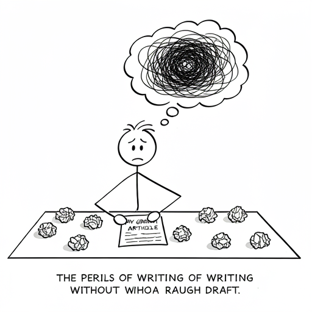
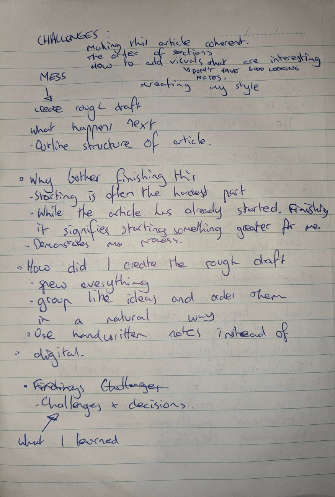

article /ˈɑːtɪkl/ noun a piece of writing included with others in a newspaper, magazine, or other print or online publication.
I sit here, staring at my screen with several tabs already open and not a single sign of progress except for this sentence. An hour and a half has passed since I decided to start. How do I begin?
I have an abstract notion of what I am trying to achieve, but now that the time has come to translate my mental image into its physical form I am faltering. There are countless possibilities on how to proceed, yet I only need to pick one. Let me define a topic: "document the process of writing your first article". Great. Was that helpful? Maybe.
I certainly am no expert on where to begin. I need a rough draft. Without any plan, this article is guaranteed to be a jumbled mess. Let me jot down some ideas and get back to you (and take a break, it's been two hours).
Phew, I spent a decent while designing an article structure by hand (another hour to be exact) and now I'm back the next day. After I describe the process for creating my rough draft, I would like to express why I think it's important to finish this article and describe what purpose it serves. Then, I will share some of the challenges I faced in writing this article and how I addressed them.
The rough plan I made earlier was instrumental in giving this article direction. The technique I used for creating my plan is almost certainly a thoroughly understood and documented methodology, though I have not yet searched for its formal name. Perhaps it's simply called 'brainstorming'.
The first step in drafting is to understand the topic and spew every thought onto a page in a handwritten mess. Thoughts will lead on to new thoughts. It is essential to brainstorm by hand so that you're not constrained by the graphical limitations of software. Once every concept your mind can conjure up has made its way onto your page, you can connect similar ideas to form themes. Those themes form the structure of your article. Ordering and connecting those themes is another challenge altogether and a skill I hope to develop with experience. Experience I can't achieve without first starting (and subsequently finishing) this article.
So what is the point of writing this article and why bother to finish it? Firstly, I cannot understate the satisfaction that comes with finishing a task, no matter how trivial. In my case, I have recently been feeling the urge to write. More specifically, I would like to develop my written communication skills; and in doing so, I'll be able to write future articles faster and better than this one. The subject of this article also serves to record my process for learning the art of writing.
Often, I find that starting a project is the hardest step. Like when trying to push a bogged car out of the mud, once you have momentum things become easier. For me, finishing this article would signify the start of something greater. The start of an ongoing mission to improve my writing skills. While it is far from perfect, this finished article will serve as a point of reference to see my improvement in future articles.
This article has not been an easy task, there were a number of challenges. Firstly, how to make the article coherent. Secondly, how to make the purpose clear. Finally, ensuring the article is visually appealing and not just a wall of text. I can only say that I did my best, and failure to completely overcome these hurdles is a side-effect of the learning process.
When it comes to the challenge of making the structure and content of this article make sense, I faced this difficulty by creating the rough draft. The rough draft is a tool that has proved itself to be invaluable throughout the writing process. It also greatly increased the speed at which I could write. When forming the structure, the order of themes is something I went back and forth on. I wrote in what felt a natural order, as my skill progress I believe my writing intuition will improve.
Regarding the challenge of defining a purpose, I am still not absolutely certain what the point of this article was. I think that lack of clarity will not be lost on some readers. I can only re-iterate that it signifies the start of more to come. This article serves as a placeholder and point of reference for future works. In the future, I hope the topic of my articles will be a little less meta.
Finally, the more mundane yet no less important challenge of creating a visually engaging piece. I imagine most people (myself included), would struggle to get past a large wall of text. I tried to resolve this issue by using some images, and modifying the tExT fOrMaT in places. I believe a better method would be to develop a unique and engaging writing style. I look forward to developing my own writing style over time.
Wow, it looks like I'm already up to writing the final paragraph of my first article. Thank you for taking the time to read about my writing journey so far. Despite the topic being a little vague, I was able to practice a number of new skills, and add a new tool to my writing arsenal, the rough draft. I don't believe this will be my best work, but it will always be my first work.